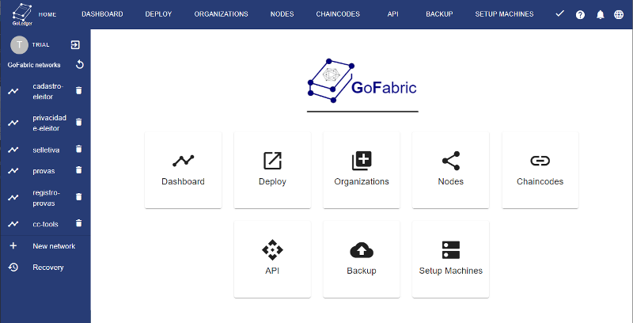

External Tools
GoLedger CC-Tools library has a range of external tools that help immensely in the journey of developing a permissioned Blockchain based on Hyperledger Fabric
cc-tools-demo- public repository with example assets and transactions using GoLedger CC-Tools librarycc-webclient- docker image with web application to interconnect with Rest Api.GoFabric- network orchestration platform for production environments. https://gofabric.io
cc-tools-demo
Open repository with examples and transactions.
The repository can be accessed as follows:
git clone https://github.com/goledgerdev/cc-tools-demo.git
cc-web-client
Docker image providing web application for testing.
The container can be instantiated as follows:
docker run -p 0.0.0.0:8080:80/tcp --name cc-webclient goledger/cc-webclient:latest
GoFabric
GoFabric is a Hyperledger Fabric Blockchain orchestration platform fully compatible with GoLedger CC-Tools library
The platform can be accessed at the following link: https://gofabric.io and has the following features:
- Deployment of cloud environment networks (AWS, IBM, Azure, etc) or on-premise
- Instantiate chaincodes (compatibility with CC-Tools)
- Update chaincodes
- Add or remove peers
- Add orderers
- Add orgs
- Instantiate or update Rest Servers
- Automatic code generation GoLedger Templates

Community
Join our community at Discord